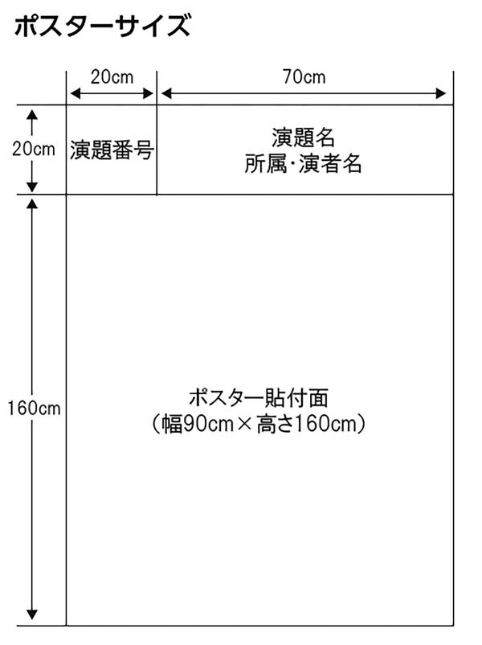

座長・演者の皆様へ
座長へのお知らせ
口演発表
口演発表の座長の先生は、担当セッション開始15分前までに、会場内前方の「次座長席」にご着席ください。
ポスター発表
ポスター発表の座長の先生は、担当セッション開始15分前までに、1番目の発表ポスター前にお越しください。
発表者へのお知らせ
口演発表
1. 発表時間
【主 題】発表7分 / 質疑5分
【特別企画】発表10分 / 質疑5分
【一般演題】発表5分 / 質疑3分
- ・口演発表は1分前に黄ランプ、終了超過時には赤ランプを点灯してお知らせします。円滑な進行のため時間厳守でお願いします。
- ・発表セッション開始15分前までに、会場内前方の「次演者席」にご着席ください。
2. PC発表データの受付
学会当日に発表データの受付を行います。発表予定のセッション開始時刻60分前までに展示場内に設置するPC受付にて、発表データをご提出ください。
受付場所：PC受付（展示場内）
受付時間：11月3日（金）7:20～16:00
11月4日（土）7:20～13:30
11月4日（土）7:20～13:30
※発表60分前までに必ずお越しください。なお、早朝の発表の方は、発表の30分前までに受付をお済ませください。
※2日目の午前中に発表の方は、可能な限り前日の1日目に受付をお済ませください。
※PC持ち込みの場合でも外部出力確認をさせていただきますので、PC受付へお越しください。
3. 発表用データの作成
- ・発表はすべてPC発表（PowerPoint）のみといたします。
- ・発表データは、Windows PowerPoint 2016～2019のバージョンで作成してください。
- ・発表データ作成後、作成したPC以外でのPCで正常に動作するかをチェックしてください。なお、PC受付や講演会場ではデータの修正は出来ませんので、予めご了承ください。
- ・スクリーンサイズは、16：9にてご用意いたします。
- ・PowerPointの「発表者ツール」は使用できません。発表用原稿が必要な方は、各自ご準備ください。
- ・USBメモリは、ウイルス定義データを最新のものに更新された状態のセキュリティーソフトでウイルスに感染していないことをご確認の上、お持ち込みください。
【データ持ち込みでの発表の場合】
- 1）作成したデータをUSBメモリに記録して、PC受付にお持ちください。
-
2）フォントは文字化け、レイアウト崩れ等を防ぐため、Windowsで標準インストールされている下記フォントを推奨いたします。
MSゴシック、MSPゴシック、MS明朝、MSP明朝、メイリオ、Arial、Century、 Century Gothic、Times New Roman - 3）演台上には、モニター、マウス、レーザーポインターをご用意いたします。発表データの1枚目をスライドショーの状態でスクリーンに映写しますので、ご自身で演台上のマウス・キーパッドを操作してプレゼンテーションを行ってください。
【PC持ち込みでの発表の場合】
-
1）会場で用意するPCケーブルコネクタの形状は、HDMIです。
外部モニターの出力端子形状を確認し、必要な場合は接続用の外部出力変換アダプターを必ずご持参ください。 - 2）バッテリー切れ防止のため、電源（AC）アダプターを必ずご持参ください。
- 3）起動時にパスワードを設定している場合はあらかじめ解除し、省エネ設定やスクリーンセーバーも作動しないように、事前に解除をお願いいたします。
- 4）Macでご発表される場合、またMacで作成したものと動画・音声データを含む場合は、必ずご自身のPCをお持ち込みください。
- 5）発表データは、バックアップとしてUSBメモリでご用意ください。ただし、Macで作成したPowerPointデータの場合、会場で用意するPC（Windows）でも開けますが、正常に表示されない可能性もございますので、予めご了承ください。
ポスター発表
1. 発表時間、貼付・撤去
-
1）【発表日時】11月3日（金）13:30～14:35
- ・発表5分 / 質疑3分
- ・発表セッション開始の15分前までに、ポスターの前へお越しいただき各パネルに用意したリボンを着けて待機ください。
-
2）【貼付日時】11月3日（金） 8:10～11:00
【掲示期間】11月3日（金）11:00～17:00
11月4日（土） 8:10～13:30
【撤去日時】11月4日（土）13:30～14:30

2. 発表用ポスターの作成
- 1）ポスターパネルの規格は図を参照ください。パネル上部20cmに演題番号を事務局で用意いたします。残り70cmは演題名、演者名、所属にご使用ください。掲示可能スペースは160cm×90cmです。
- 2）ポスターの貼付・撤去は、上記の時間に従い、各自にてご自身の演題番号のパネルに掲示してください。
- 3）掲示に必要な磁石等は運営事務局にて用意いたします。
- 4）ポスターの撤去は上記の時間内に速やかに行ってください。撤去されていないポスターは、運営事務局にて処分いたします。撤去し忘れのポスターについて大会事務局は一切責任を負いませんのでご注意ください。
利益相反（COI）について
発表者の方は「日本整形外科学会における事業活動の利益相反（COI） に関する指針」 に基づき、利益相反の申告をお願いいたします。 なお、利益相反の有無に関わらず、全ての発表者にご開示いただく必要があります。 口演発表の場合は、スライドの2枚目に該当するCOIの有無、および有の場合はその状態を開示してください。また、ポスター発表の場合は、ポスターの最後に該当するCOIの有無、および有の場合はその状態を開示してください。